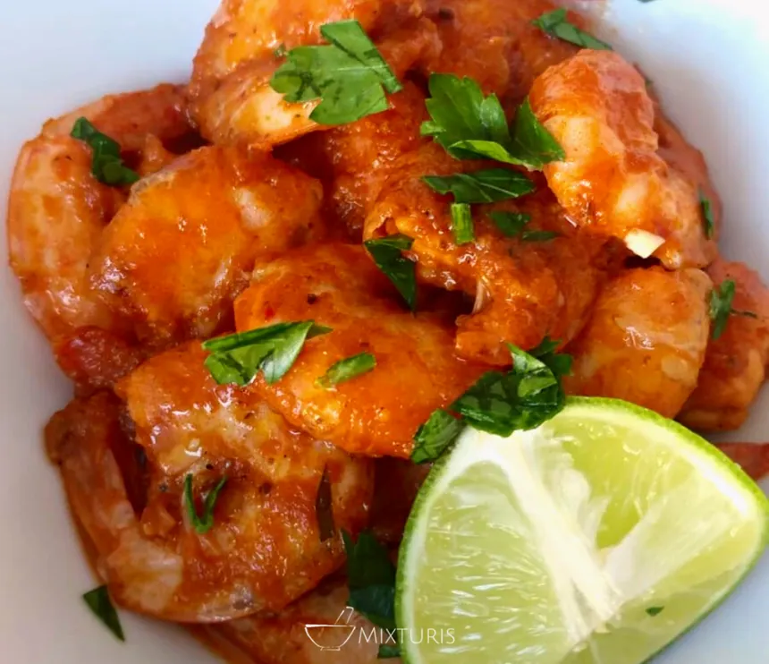

Home
Camarones cucaracha
Prepara estos camarones estilo cucaracha, una forma de degustar estos mariscon salteados con salsa picante

Cuando se trata de cocinar mariscos me emociono, es una de mis cosas favoritas. Degustar de la variedad de frutos del mar y cocinarlos de distintas formas me apasiona. Por eso, te enseñaré a prepararlos de una manera muy exquisita y espectacular.
Estos camarones a la cucaracha se preparan con un salteado clásico de mantequilla y ajo, pero lo que verdaderamente le da el toque es la salsa de tomate combinada con chiles que le da un toque picante. Además, también lo aderezaremos con limón.
Ingredientes
- 500 gramos de camarones crudos, pelados y desvenados
- 3 cucharadas de mantequilla
- 4 dientes de ajo picados
- 1/2 taza de salsa de tomate
- 1-2 chiles chipotles en adobo, picados (ajusta según tu tolerancia al picante)
- Jugo de 1 limón
- Sal y pimienta al gusto
- Cilantro fresco picado para decorar (opcional)
Preparacion
- En una sartén grande, derrite la mantequilla a fuego medio. Agrega el ajo picado y sofríe hasta que esté fragante, aproximadamente 1-2 minutos.
- Agrega los camarones a la sartén y cocina hasta que se vuelvan rosados y opacos, alrededor de 2-3 minutos por cada lado. Retira los camarones de la sartén y resérvalos.
- En la misma sartén, agrega la salsa de tomate y los chiles chipotles picados. Cocina por unos 2-3 minutos, permitiendo que los sabores se mezclen.
- Regresa los camarones a la sartén y mezcla bien para que se cubran con la salsa. Cocina por 1-2 minutos adicionales para que los camarones absorban los sabores.
- Agrega el jugo de limón, sal y pimienta al gusto. Mezcla bien.
- Retira del fuego y sirve caliente, decorado con cilantro fresco picado si lo deseas. Acompaña con arroz blanco o tortillas para una comida completa.
- ¡Disfruta de tus deliciosos camarones a la cucaracha!